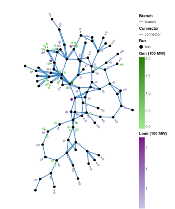
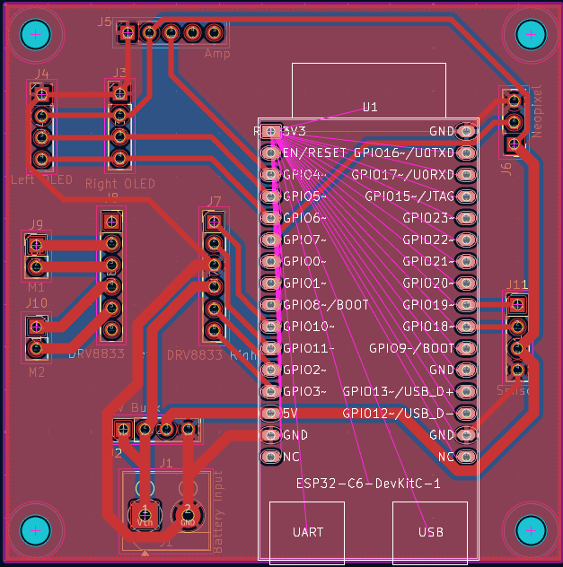
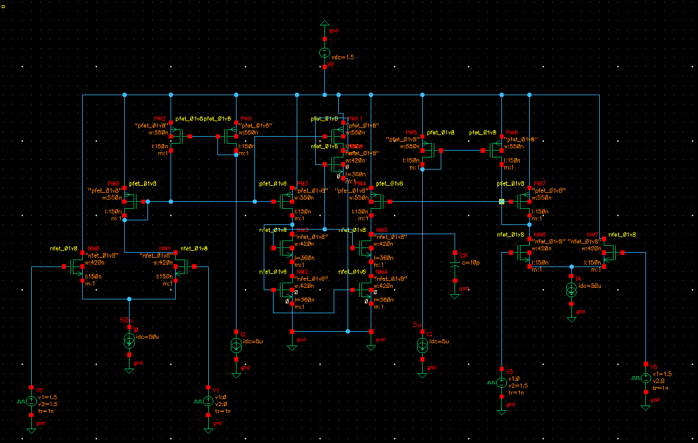
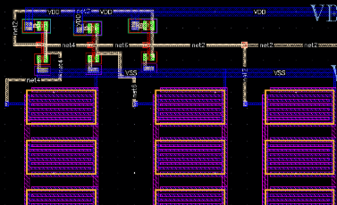
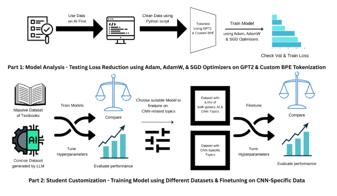
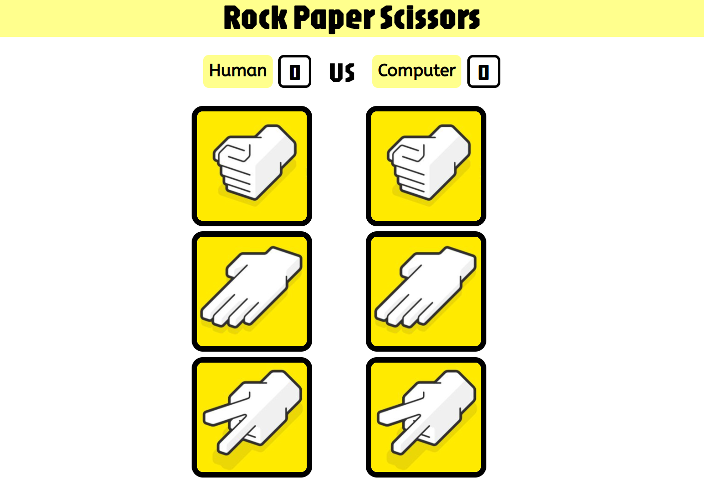
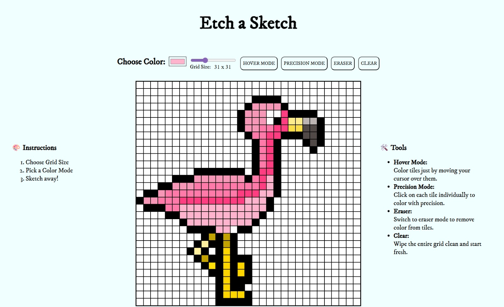
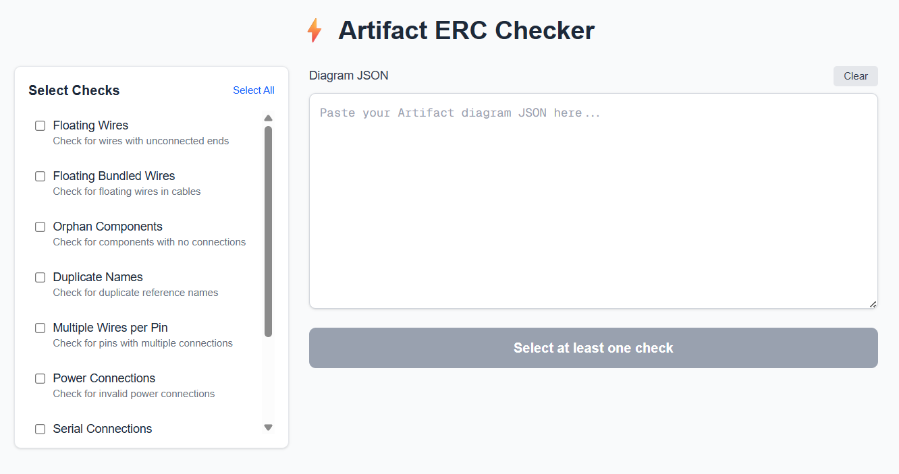
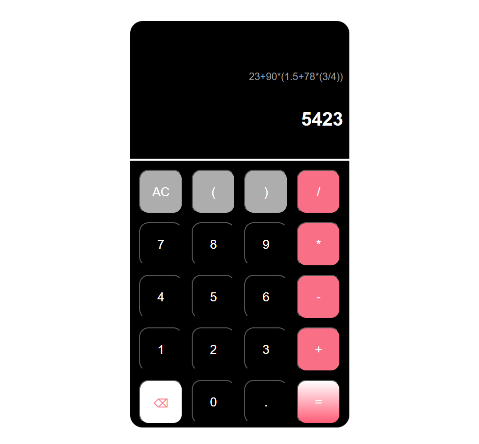

tejaswi manoj
I am

POWER SYSTEMS
Developing a Synthetic Electric Grid in Africa
This paper presents a synthetic power grid test case
developed for Ghana, West Africa, that can be used for power systems studies, algorithmic
benchmarking, regional research, and
educational purposes.
Python
Julia
EMBEDDED SYSTEMS
Voice-Controlled Spray Alarm Clock [In Progress]
A voice-controlled alarm clock that wakes you with music and sprays
water whenever you try to snooze.
Raspberry Pi
Python
TinkerCAD


ANALOG AND MIXED-SIGNAL DESIGN
Charge Pump for Phase Locked Loop (PLL) [In
Progress]
A charge pump for a PLL designed as part of the Analog and Mixed-Signal
Design Subteam under the GT Silicon Jackets Club.
Cadence Virtuoso


ANALOG AND MIXED-SIGNAL DESIGN
Ring Oscillator
A ring oscillator designed as the onboarding project for the Analog and
Mixed-Signal
Design Subteam under the GT Silicon Jackets Club.
Cadence Virtuoso
MACHINE LEARNING
Course Assistance LLM
A research project on training and fine-tuning a customized GPT-based
language model for course assistance (ECE 2806).
Python
Jupyter Notebook


WEB DEVELOPMENT
Etch a Sketch
A webpage of something between a notepad and an Etch-A-Sketch, with
different modes, an eraser, and abilities to resize grid size up to 100 x 100 square tiles or
clear the grid.
HTML
CSS
Javascript


WEB DEVELOPMENT
Artifact ERC Checker
A web-based Electrical Rule Check (ERC) engine and visualization tool.
TypeScript
React
Javascript
TailwindCSS
WEB DEVELOPMENT
Calculator
A calculator that follows the BODMAS order of operations and supports
decimals.
HTML
CSS
Javascript
